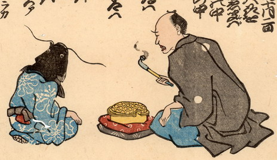

鯰が座って、男と話をしている。瓢箪を組み合わせた図柄の入った青い着流しを着ており、鯰の手足は人間のものである。男は煙管を手に持ち、膝元に灰皿のようなものを置いている。
出典：親書誌：U426_nichibunken_0171：ゑんまの子のわけ；エンマノコノワケ／日付：2010／資源識別子：U426_nichibunken_0171_0001_0000
Copyright (c)2010- International Research Center for Japanese Studies, Kyoto, Japan. All rights reserved.